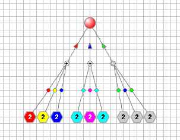
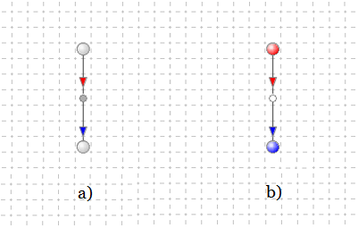
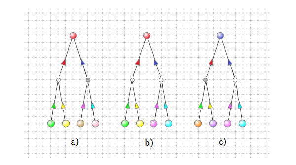

The content of this page assumes that the qualitative dynamical systems are the collections of abstract properties—where their run-time states reflect the property qualitative states of the real or designed systems. This page describes the Multicolored Logical Net (McLN) graphical modeling formalism designed for creating qualitative dynamical systems simulation models that can be developed and executed on a computer screen as well as printed on paper.
Being developed not only for reproducing the behavior of qualitative dynamical systems but also for visualizing property states of these systems and their changes—the McLN models are created as graphical views of the models' all elements, as well as their current states, and underlying dependence relations. Accordingly, the McLN model is defined as a bipartite directed graph consisting of two types of nodes—Property nodes and Condition nodes—and two types of connecting arcs: Recognition arcs directed from Properties to Conditions and Generation arcs directed from Conditions to Properties. Figure 1 illustrates a basic example of a small McLN model structured as a bipartite directed graph.

Figure 1. One Property depends on three situations.
The McLN Model Structure
In general, the structure of an McLN model is determined by a set of Properties (determined corresponding to the properties of the modeled system) and a set of Conditions (corresponding to the various operational situations that can arise within the system). The states of the Conditions are governed by their dependencies on the states of one or more Properties, while the states of the Properties are governed by their dependencies on the states of one or more Conditions.
Thus, in the structure of the McLN model:
The Recognition arcs are the outgoing elements of Properties, and incoming
elements of Conditions; while, the Properties are the input elements and
the Conditions are the output elements of these arcs.
The Generation arcs are the outgoing elements of Conditions, and incoming
elements of Properties; whereas, the Conditions are the input elements and the Properties
are the output elements of these arcs.
Accordingly:
A single Property or a group of Properties connected to a single Condition
via directed Recognition arcs are regarded as the input Property or Properties of that Condition,
whereas the Condition is regarded as the output Condition of its input Properties.
Similarly, a single Condition or a group of Conditions connected to a single Property
via directed Generation arcs are regarded as the input Condition or Conditions of that Property,
whereas the Property is regarded as the output Property of its input Conditions.
In the example above, Recognition arcs directed from three distinct groups of Properties to their output Condition represent dependence of three Conditions on their three input Properties, which characterize three distinct situations. These arcs are marked with colored dots that stand for those expected states that their input Properties should hold in order for their combination to represent the expected situation that can be recognized.
The Generation arcs directed from three Conditions to a single Property represent dependence of that Property on the three facts of presence of the three expected situations. These arcs have small arrowheads marked with colors representing the proposed states. The Property takes one of the three proposed states when the state of any of the three input Conditions indicates the fact that its corresponding expected situation has been recognized.
The McLN Model Behavior
Since the primary objective of the McLN models is to reproduce the behavior of a modeled system, the elements of the McLN graph are considered to be the simple virtual discrete devices. Each of these devices has a certain number of inputs and outputs. The Properties are endowed with the ability to hold various qualitative states and the Conditions may hold logical states. Both nodes interact with one another by transmitting and receiving states across their connecting arcs. The arcs act as transfer channels capable of transforming their inputs into designated outputs.
A model, thus, is assembled by:
The Property function is to wait for inputs (proposed states) transmitted from its incoming Generation arcs; process the collective inputs by choosing a single final state from all received proposed states (some, or all, of which may be undefined); updates the current state with the chosen final state, when it is defined, or leave the current state unchanged, if the final state is undefined; transmit the updated or unchanged current state to the inputs of all its outgoing Recognition arcs.
The Recognition arc function is to receive the current state of its input Property; evaluate whether this state matches its pre-defined marking color; and transmit the resulting assessment to the input of the arc's output Condition.
The Condition function is to receive the outputs from all its incoming Recognition arcs; verify the presence of the expected in the model situation by computing a multivalued conjunction (implemented as a chain of binary conjunction operations applied to outputs of incoming Recognition arcs); update its current status to reflect latest fact of situation recognition (or not recognition); and transmit the status to its outgoing Generation arcs.
The Generation arc function is to receive the status of its input Condition, indicating the presence or absence of the expected situation; transform this status into a Property proposed state (according to the arc's arrowhead marking color); and transmit the proposed state to the input of the arc's output Property.
The McLN Model Simulation
As with replicating the behavior of any dynamical system, simulating qualitative systems begins with initialization. McLN models are executed by their McLN Simulation Engine (MSE), which initializes all Recognition and Generation arcs with their respective "expected" and "generated" states, alongside all Properties with their predefined "initial" states. These states are usually established during model creation—based on the document: "Qualitative System Property States Dependencies Specification"—and are picked up from a designated state (color) palette. This initialization phase prepares the model for simulation.
However, the purpose of this section is not to describe the MSE's operating algorithm, but to examine model behavior as a process of executing functions associated with each element. Therefore, following the metaphor introduced at the beginning of the "McLN Model Behavior" section, all model elements are viewed not as interpreted by the MSE, but as autonomous components. In an idealized sense, these components are regarded as simple virtual devices that perform their functions by themselves and interact with other devices by transmitting to them and receiving from them current or modified states. Accordingly, the mechanism that transforms the model from its current state to the next is described below through the operation of these devices.
To preserve the logic of transformations of a model's current state (current states of its properties) to its next state (updated states of some properties), its behavior is described below as a five-stage process. When performed by the MSE, this sequence is implemented as event-driven computation.
Stage 1 (State Propagation) is performed by the Property output logic. For that, each Property propagates its current state to the inputs of its outgoing Recognition arcs.
Stage 2 (Expectation Assessment) is performed by the Recognition arcs. Each arc: a) receives the current state from its input Property, b) verifies whether the current state matches the expected marking state (color) assigned to the arc dot, and c) transmits the resulting expectation assessment to an input of the arc's target output Condition.
Stage 3 (Situation Evaluation) is performed by the Conditions to detect the facts of presence of expected situations within the model. For that, each Condition: a) receives the expectation assessments from its all incoming Recognition arcs, b) verifies whether all expectation assessments indicate the match of Condition's input Properties current states to expected states, c) sets its internal situation status that reflects the fact of either presence or absence of the expected situation, and d) transfers the situation status to the inputs of the Conditions's outgoing Generation arcs.
Stage 4 (State Generation) is performed by the Generation arcs. Each arc: a) receives the situation status from its input Condition, b) transforms the status into the target Property proposed state (based on the marking state (color) of the arc arrowhead, and c) transfers the proposed state to the input logic of the arc's target output Property.
Stage 5 (State Selection and Update) is performed by the Property input logic. which is to decide should the Property current state be changed or not. For that, each Property input logic: a) receives the proposed states from its all incoming Generation arcs, b) chooses a single Property state from all the Property proposed states (some or all of which may turn out to be undefined), and c) sets the chosen single state as its new current state (when it is defined) or otherwise ignores it leaving the current state of the Property effectively unchanged; d) activates output logic to propagate new updated or unchanged current state to the inputs of the Property's outgoing Recognition arcs, e) fires "Property State Change" event to trigger the MSE's dependency inference machinery.
The McLN Model Examples
This section presents two basic McLN structures and explains how the functionality associated with Properties, Conditions, and arcs drives the behavior of dependence-driven models.
Example 1. This example depicts the most minimal McLN structure. It consists of only one premise Property, one Recognition arc, one Condition, one Generation arc and one conclusion Property. The Condition's input Recognition arc is marked with red color; consequently, the arc is supposed to recognize a situation when its input premise Property is in the red state. The Condition's output Generation arc is marked with blue color; hence, it is supposed to generate a blue proposed state that the conclusion Property has to take when the Condition holds status indicating that its input Property is in the expected red state. This example is presented in Figure 2.

Figure 2. The most minimal dependence structure and the way it operates.
Figure 2a illustrates a situation where the premise Property is in its initial (gray) state, which is not expected by the Recognition arc. So, the Condition is not satisfied and its output Generation arc does not generate its proposed state for the conclusion Property to take. Hence, the conclusion Property is still in its initial gray state.
Figure 2b illustrates a situation where the premise Property state changed. It is now in the red state. This state is expected by the Recognition arc. Thus, the state is recognized and the Condition is satisfied. As a result, the Condition's Generation arc is activated and generates its proposed blue state at its output for the conclusion Property to adopt. Finally, as the conclusion Property does not have any other input arcs and, hence, does not have any competitive proposed states, it adopts the only available single proposed state and transitions to blue state.
Example 2. This example depicts the McLN model's two-dependence structure, which consists of one conclusion Property whose state is controlled by two competing dependencies. Each of these dependencies has its own set of two premise Properties. Figure 3 shows three snapshots of the model taken at different times.

Figure 3. The conclusion Property state is controlled by two dependencies.
Figure 3a illustrates the case where only the left dependence is satisfied. In this snapshot, the two left premise Properties match their expected green and yellow states. Consequently, the situation characterized by this combination of states is recognized, and the dependence of the conclusion Property on this situation is resolved. At the same time, the situation represented by the pink states of the two right premise Properties is not recognized. Accordingly, as there is no alternative state which could be proposed by the right dependence, the conclusion Property adopts the only available red state proposed by the left Generation arc.
Figure 3b illustrates the case where both dependencies are simultaneously satisfied. The left situation still remains recognized and generates its proposed red state; whereas, the right situation is now also recognized. Consequently, the right dependence is resolved and its Generation arc produces a competing blue proposed state for the conclusion Property to take. Since currently both dependencies generate different (red and blue) states and, therefore, have conflicting and mutually exclusive proposed states, these states are deemed contradicting. In the result, the conclusion Property maintains its prior, unchanged red state.
Figure 3c illustrates the case where only the right dependency is satisfied. In this snapshot, the two left premise Properties have transitioned to states that no longer match the expected situation, causing the left dependence to go unsatisfied. Meanwhile, the right situation remains recognized and its right dependency remains resolved, as well. Therefore, the right Generation arc still produces its blue state. As a result, since at the moment the right dependence has no alternative (as the left dependence, at the moment, does not compete), the conclusion Property adopts the only available blue state.
~ ~ ~ ~ ~ ~ !! ~ ~ ~ ~ ~ ~
Examples, presented in Figures 1, 2 and 3 are created in the "Qualitative Dynamical System Modeling & Simulation Environment" - the software application supporting development of the McLN models and simulation of their behavior.
Several more McLN model examples can be viewed in action via the Carousel Show, reachable from the section: "Kaleidoscope Project Applications Carousel Demo" located at the end of the Main Page.
This page features several snapshots of the application’s screens and provides brief explanations of the content of the screenshots.
Click the link to opens this page.
This page is the showcase running the Graphical User Interfaces of the two Java desktop applications demonstrating creation and usage of Qualitative models.
Click the link to opens this page.